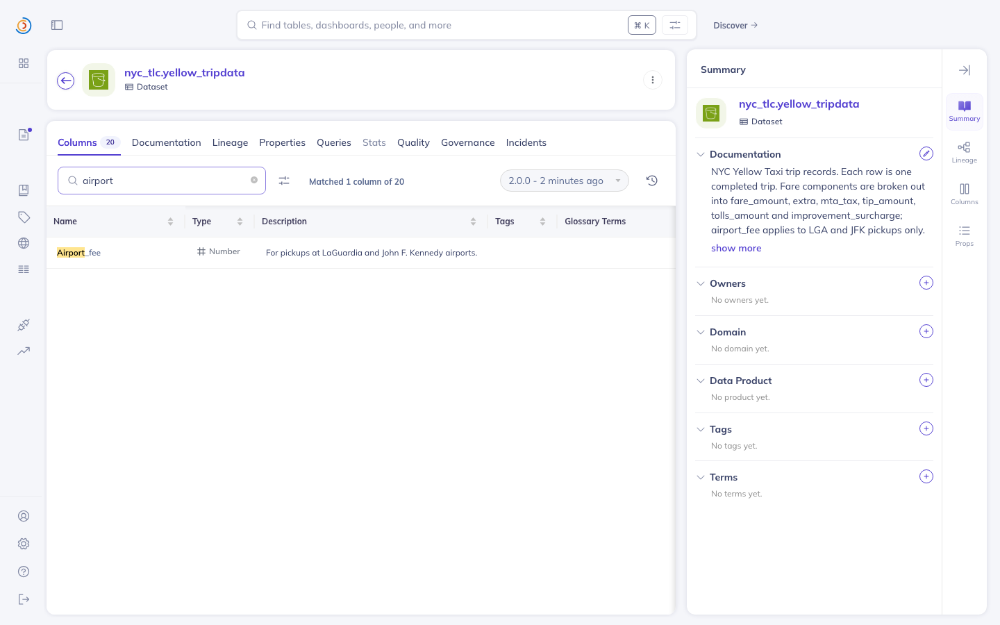
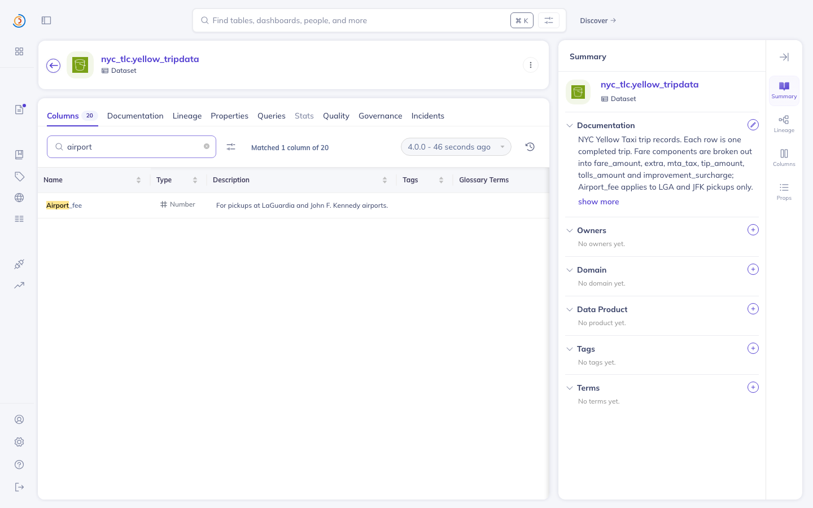

Finds documentation in a data catalog that stopped being true, proves it from DataHub's own change log, and fixes it behind a hash-verified human gate.
Nothing on this page asks you to install
anything. Every figure is read out of a committed artefact at build time by
scripts/build_pages.py.

Airport_fee. Summary panel, same
page, same moment: the documentation still says airport_fee. The NYC Taxi
& Limousine Commission renamed that column in February 2023 and added
cbd_congestion_fee in January 2025. Both labels are derived by diffing the
TLC's own published parquet schemas month over month
(bench/oracles/scan_tlc.py),
so they are the TLC's, not ours.
Run 94b7e03ee841, read directly from
audit-ledger.jsonl.
Every refusal is in the chain with everything else, because a ledger of successful
writes only would be a changelog.
| # | stage | entry hash | outcome | proposal |
|---|---|---|---|---|
| 1 | scan | ef2de1e014b7 | ||
| 2 | propose | 49fe1eac964b | a844edb7f3b9 | |
| 3 | approve | 10b4ea0d4dd1 | NOT_APPROVED | a844edb7f3b9 |
| 4 | propose | 220ea4e7265a | a844edb7f3b9 | |
| 5 | approve | acddfad21955 | NOT_APPROVED | a844edb7f3b9 |
| 6 | propose | e660fabba6bf | ec39d56f76df | |
| 7 | approve | 4f9edb4b3642 | STALE | ec39d56f76df |
| 8 | propose | 808f5f3cab04 | a844edb7f3b9 | |
| 9 | approve | 6c72cbcd9b78 | APPROVED | a844edb7f3b9 |
| 10 | execute | 160f5ef2d8fa | VERIFIED | a844edb7f3b9 |
Row 7 is the one worth reading twice. The confirmation token
a844edb7f3b9 was issued for one piece of text; the write that arrived carried
a different text, so its proposal hashed to ec39d56f76df and the token no
longer matched. The write failed closed. 3 of the 10 records are
refusals, covering both refusal conditions: rows 3 and 5 are the same condition twice,
because scripts/demo.sh attempts the write
once as a dry run and once for real and the gate refuses both.
$ stilltrue verify --run 94b7e03ee841 OK: chain valid (10 records)
The correction appears in DataHub's own documentation timeline, the same service the detector reads its evidence from. Command and unedited response in L3-EVIDENCE.md, section 6.
category: DOCUMENTATION operation: MODIFY Documentation of 'urn:li:dataset:(...nyc_tlc.yellow_tripdata,PROD)' has been changed from '...improvement_surcharge; airport_fee applies to LGA and JFK pickups only. ...' to '...improvement_surcharge; Airport_fee applies to LGA and JFK pickups only. ...'
A rename can leave a column description attached to a field that no longer exists. No row renders it, and the Agent Context Kit drops the aspect (datahub#18628 is the fix for the second half of that sentence). Removing it changes almost nothing on screen, which is the point, so the proof is a pixel diff of two captures taken by the same script before and after.
1440x900, 1296000 pixels differing pixels: 168 (0.0130%) all differences inside x 76-774, y 90-264
Reproduce with
scripts/prove_invisible.sh. The
region that differs is the version chip's clock, not the note.
| Claim | Denominator | Where |
|---|---|---|
| 11 drifted, 12 still true, 58 abstained | 81 checks over 77 datasets | L3-EVIDENCE.md |
| 1 drift, 6 current, 29 abstained, zero false drift | 36 checks over 25 tables | examples/abstention/ |
| 6 false verdicts without the change-log requirement, 0 with it | the same 25 tables | README.md |
| 41 months scored exactly right, 0 false alarms | 41 consecutive months, 2023-01 to 2026-05 | REPLAY-REPORT.md |
| 2 orphans found of 2, 0 false alarms | 199 correct descriptions | HOLDOUT (dbt_iterable) |
| 12 orphans found of 12, 0 false alarms | 304 correct descriptions | HOLDOUT (dbt_microsoft_ads) |
| A coverage check finds 1 of the 2 | the same dataset | REPORT.md |
Both holdout repositories were chosen by a rule frozen before the search ran
(bench/freeze.json, commit
d3e6ccb); the second walk's declaration is
HOLDOUT-v2-DECLARATION.md, committed
before it was run. Both benchmarks ship with --mutate-skip-rewrite, which
removes the schema rewrite and takes the score to zero.
One click opens a Codespace and one command takes it from nothing to the full loop. Measured at 12 minutes 21 seconds on a 2-core container, most of it DataHub's images pulling.
make demo-from-cold
Apache-2.0 ·
github.com/cyh7789/stilltrue ·
this page is generated by scripts/build_pages.py from the committed run
artefacts, so it cannot drift from the repository.